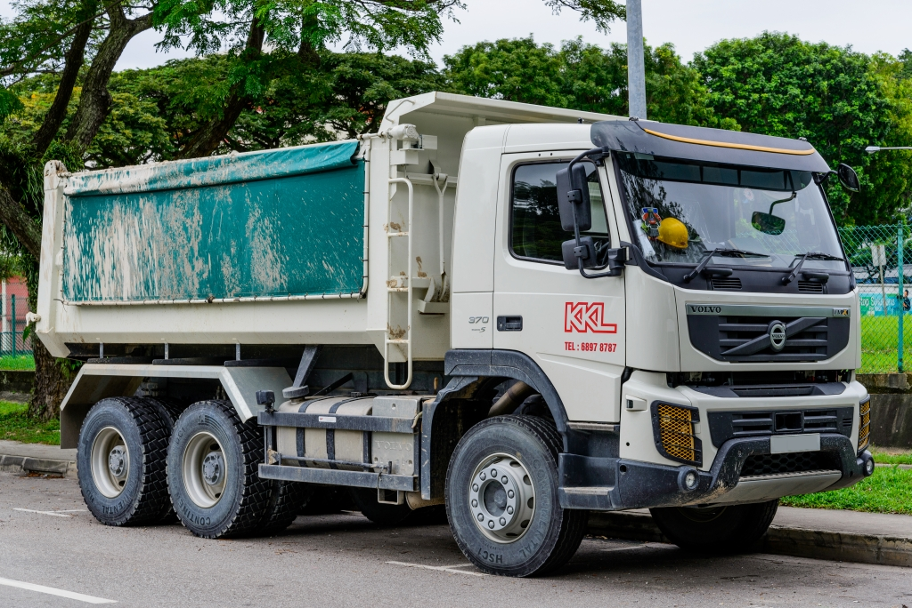
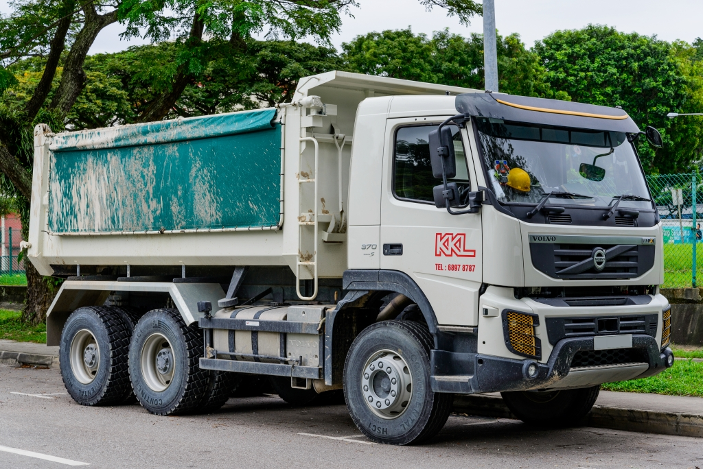

Transport Enthusiasts
All aboard! Connect with fellow transport lovers who share your passion for everything that moves. From vintage trains to modern metros, classic buses to cutting-edge aviation - find your transport tribe!
 Transport Group Finder AI Assistant
Transport Group Finder AI Assistant
Transport Group Categories
Railways
Exploring the engineering, history, and future of Singapore's MRT and LRT systems. For fans of trains, subways, and light rail.

Bus Systems
For fans of Singapore's public buses, from new models to operational details. Spotting, documentation, and bus interchange meetups.
Planes & Aviation
A community for spotting and photographing commercial aircraft at Changi Airport, and for RSAF and military aviation fans.


Cars
From supercars and JDM legends to classic and vintage vehicles. For spotters, history buffs, and restoration fans in Singapore.

Ships & Maritime
Enthusiasts who spot and identify ships in Singapore's busy port, from tankers to ferries. Maritime history and port activity.
 

Trucks & Heavy Vehicles
A niche community for spotting prime movers, container trucks, and construction vehicles in Tuas and industrial estates.

E-Scooter & Bicycle
For students and commuters who use bicycles and PMDs. Share routes, tips, and advocate for better cycling infrastructure and safety.